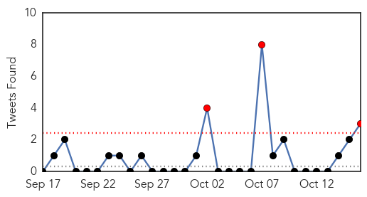

Influenza
30-Day Web Trend
5 alerts, 13 warnings

30-Day Twitter Trend
2 alerts, 0 warnings

Article Locations

Article Confidences
Top Articles:
- 0.995
- County officials urge public to get flu shot, take precautions in flu season
- 0.981
- DE 1st Case of Flu Diagnosed in Sussex Co.
- 0.959
- Tamiflu Prescription Could Help Treat the Flu
- 0.958
- Students get flu shot at Boise State
- 0.928
- Officials encourage flu vaccinations in Michigan
- 0.840
- Flu season around the corner: Ottawa Public Health
- 0.826
- A Future Ebola Solution? Scientists Discover First ‘Virological Penicillin’ in Chinese Herb
- 0.808
- Flu season arrives in London
- 0.729
- Eastern Michigan University vaccinating students for the flu
- 0.723
- Global Research - Centre for Research on Globalization
- 0.705
- Lawrence Wein: Five Disaster Scenarios — and What We Learn From Them
- 0.620
- Officials Encourage Flu Vaccinations in Michigan
- 0.616
- Officials encourage flu vaccinations in Michigan
- 0.588
- Foreign Affairs Chair: Ebola Nations Process Over 100 Visa Applications Daily
- 0.535
- Brian Sullivan: Flu crisis in 1918 was like no other
Top Tweets:
-
No tweets found for Oct 16, 2014
Unknown
30-Day Web Trend
0 alerts, 0 warnings
30-Day Twitter Trend
3 alerts, 0 warnings

Article Locations

Article Confidences
Top Articles:
- 0.979
- Presbyterian followed CDC guidelines when treating nation’s first Ebola patient, officials said Thursday
- 0.977
- In New Hampshire, Another Person Dies Of EEE
- 0.974
- Child fourth case of enterovirus
- 0.964
- Uganda: No new Marburg cases reported
- 0.963
- Manitoba's 4th enterovirus patient is from province's north
- 0.929
- 3 More Babies Test Positive for TB in West TX
- 0.917
- Chicago Tribune
- 0.917
- Chicago Tribune
- 0.917
- Chicago Tribune
- 0.917
- Chicago Tribune
- 0.917
- Chicago Tribune
- 0.917
- Chicago Tribune
- 0.917
- Chicago Tribune
- 0.917
- Chicago Tribune
- 0.917
- Chicago Tribune
- 0.917
- Chicago Tribune
- 0.917
- Chicago Tribune
- 0.917
- Chicago Tribune
- 0.912
- Enterovirus investigated as link in Arizona boy’s death
- 0.910
- The world windows to Thailand
- 0.899
- Health department cancels flu shot clinics
- 0.895
- Health officials probing death of Arizona boy for possible enterovirus
- 0.887
- Public Health in the 21st Century
- 0.873
- Estonian government allocates 267,500 euros to stop spread of swine plague :: The Baltic Course
- 0.866
- Obama meets with administration officials on Ebola response
- 0.866
- Russia's Putin threatens to reduce Europe gas supplies
- 0.757
- Ohio inmate has leprosy, officials say; case is first ever found in state prison system
- 0.739
- Warning about rabies-like bat virus extends to Pilbara
- 0.623
- Evidence Grows That Obama’s Policies Caused The Deaths Of 5 American Kids And Sickened Thousands
- 0.613
- Experts Explain That Germs Cause Pneumonia, Not Cold
- 0.594
- After Cyclone, Diseases Set to Hit Visakhapatnam
- 0.593
- Qld Health defends handling of Torres Strait TB cluster 16/10/2014
- 0.564
- The Post
- 0.557
- Second death in NH from EEE
- 0.542
- New viruses 'killing amphibians' in Spain
- 0.531
- The Chronicle of Winston-Salem Blacks critical to ALS fight
- 0.517
- Spanish amphibians struck down by virus attack
- 0.514
- No Signs Of Tuberculosis In Exposed New Mexico Babies
- 0.507
- Enterovirus News
- 0.500
- No Polio Vaccinations in Remote Kandahar Areas
Top Tweets:
- 0.910
- The flu is a contagious respiratory illness that infects the nose throat and lungs. Prevent flu by getting a flu vaccine each year.
- 0.707
- 'othering' happens w/many diseases not just african disease
- 0.509
- Enterovirus D68 infections cause similar symptoms of respiratory illness as flu. Both can be serious especially for kids w/ asthma.